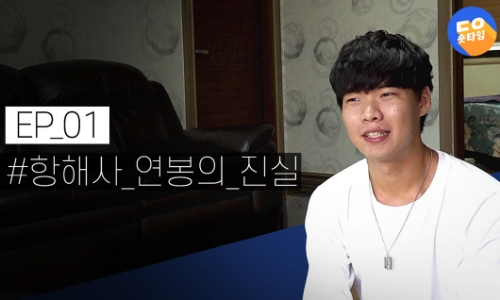
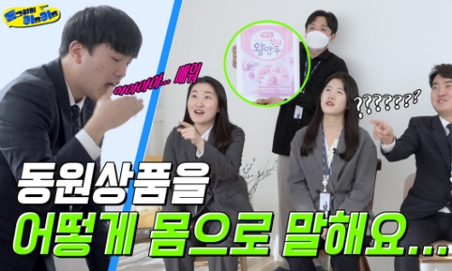

동원 슬로건
Business
Group
Business
Ocean & Logistics
- 동원산업
- 세계 1위 종합수산 식품기업
- 동원산업은 1969년 4월 식량자원의 보고인 바다를 개척하기 위해 설립되었습니다. 설립 후, 지금까지 오대양을 누비며 대한민국의 수산사업을 선도하고 있으며, 고품질 수산 식품 공급으로 식문화 발전에 기여하고 있습니다.
- 동원로엑스
- 세계 물류시장을 선도하는 종합물류기업
- 화물운송, 항만하역, 보관, 국제물류, 해외물류사업, 물류컨설팅까지 물류 전 영역을 아우르는 종합물류기업입니다. 부산, 인천, 울산, 당진, 동해 등 국내 주요 항만은 물론, 권역별 철도 및 운송거점과 글로벌 물류 네트워크를 갖추고 있습니다.
Food Culture
- 동원F&B
- 국민 건강에 기여하는 글로벌 종합식품기업
- 2000년 11월 동원산업의 식품부문이 독립하여 탄생한 식품 전문 기업입니다. 좋은 음식이 곧 보약이라는 기업철학을 바탕으로 우리의 식탁을 더 건강하게 만드는 First & Best 식문화 기업으로 성장하고 있습니다.
- 동원홈푸드
- 새로운 식문화를 선도하는 종합식품유통기업
- 식자재 유통사업부터 조미식품 제조, 푸드서비스와 외식사업, 온라인 축산유통, 온라인 가정간편식(HMR)까지 다양한 사업영역을 통해 트렌드에 발맞춘 최고의 식품과 유통서비스를 제공합니다.
Living & Finance
- 동원시스템즈
- 국내 1위 종합 포장재 전문기업
- 연구개발에 대한 과감한 투자, 차별화된 신규 아이템 개발, 적극적인 해외 사업 추진을 통해 차별화된 기능과 편의성을 갖춘 토탈 패키징 솔루션을 제공하고 있습니다.
Global
- StarKist
- 미국 No.1 참치 브랜드
- 100년 전통의 세계적인 참치 브랜드로서, 미국 상온 참치 시장의 46% 점유율을 차지하고 있습니다. 2008년, 동원그룹의 가족이 되어 생산기술 및 경영효율 혁신을 통해 매년 성장을 이어나가고 있습니다.
- S.C.A SA
- 세네갈 최대 참치 제조 기업
- 연간 최대 50,000톤의 참치를 가공 생산할 수 있는 참치 제조 전문 기업입니다. S.C.A SA의 전신인 SNCDS는 아프리카 최초의 참치 캔 회사이자 국영기업으로서, 2011년 동원그룹의 가족이 되어 새롭게 출발하며 성장하고 있습니다.
- TALOFA SYSTEMS
- 고품질 캔 포장재 전문 기업
- 고품질 캔 포장재를 미국 가공참치시장 점유율 1위 업체인 스타키스트사의 참치 캔 포장용으로 공급하고 있습니다. 해외 시장 개척을 위한 또 하나의 전진기지로서 이를 기반으로 미주, 태평양 등의 시장 공략에 적극적으로 나서고 있습니다.
- TTP
- 연포장재 전문 기업
- 베트남 최대 연포장재 기업으로서 뛰어난 원가 경쟁력을 바탕으로 베트남 내수 시장의 확대를 목표로 하고 있습니다. 베트남 성장을 바탕으로 동남아를 비롯한 해외시장 개척을 위한 수출에 힘쓰고 있습니다.




- 동원F&B, 알싸한 후추향 가득 ‘상상육포 페퍼&솔트’ 출시
- 동원F&B(대표이사 김성용)가 알싸한 후추향 가득한 ‘상상육포 페퍼&솔트’를 출시했다고 28일 밝혔다. ‘상상육포 페퍼&솔트’는 소금…
- 2023.02.28
- 동원홈푸드, 저칼로리·저당 ‘비비드키친 데리야끼소스, 굴소스’ 출시
- 동원홈푸드가 칼로리와 당을 낮춘 저칼로리, 저당 소스 ‘비비드키친 데리야끼소스’와 ‘비비드키친 굴소스’를 출시했다고 22일 밝혔…
- 2023.02.22
- 동원그룹, 지난해 매출액 8조 8,660억원… ”역대 최대”
- 동원그룹이 창사 이래 최대 매출을 달성했다. 동원그룹의 사업형 지주사인 동원산업(006040)은 연결 재무제표 기준 지난해 매출액이…
- 2023.02.14
- 동원F&B 유산균 음료 ‘쿨피스톡’, 제로 칼로리로 재탄생
- 동원F&B(대표이사 김성용)가 유산균 음료 ‘쿨피스톡’을 제로 칼로리로 리뉴얼해 ‘쿨피스톡 제로’로 새롭게 선보인다고 9일 밝혔다. ‘…
- 2023.02.09
채용
Recruitmen
열성과 도전 정신, 새로움을
추구하는 인재를 모집합니다.
동원그룹 연혁
Since
1969
First Challenger, Dongwon